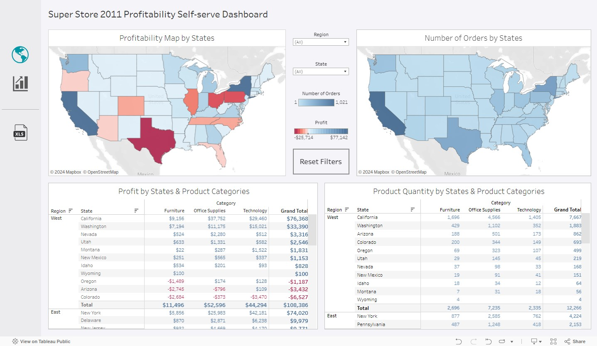
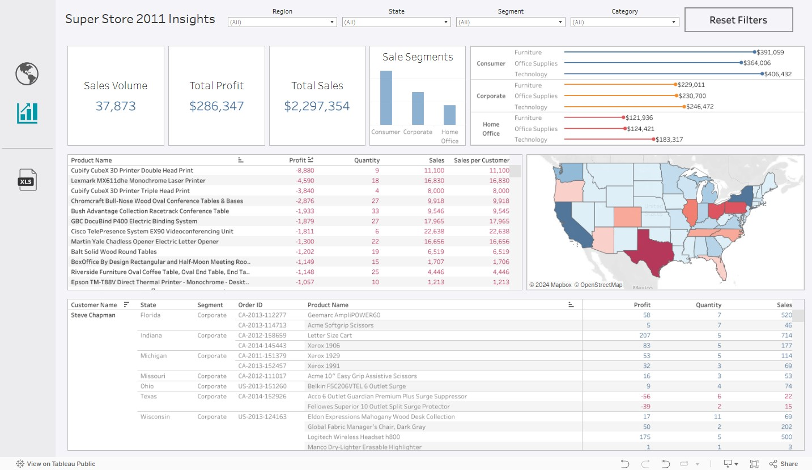

Page 1: Profitability Overview
Superstore Profitability Self-serve Dashboard
Goal: Reduce data requests load on analytics teams, and empower non-technical managers to explore and draw insights from existing data.
A big part of data requests is often sending out a list of entries or following up on queries with minor changes to filtering parameters. These requests while helpful and facilitate daily operations, can be mired by miscommunication between managers and analysts, leading to long wait time on data requests. This self-serve dashboard aims to bridge that gap and significantly reduce data request wait time by empowering managers to explore and extract insights with an intuitive, low maintenance dashboard tool.
{kind=link}
Page 2: Product Drill Down
{kind=link}
Example
Q1. Which state has the lowest profit for this period?
1. Starting from the top left graph, we have a
colour scaled map of Superstore profits within
different US states with red scales denoting
negative profit and blue scales denoting positive
profit.

2. Clicking on the state with the lowest profit (Texas),
we are provided with a quick breakdown of its
profit into major available categories. For further
deep dive into the causes of low profitability in Texas,
we will be moving to the next section of our dashboard,
the drill down.

Q1.1.What's the sale volume, profit, and sale volume distribution across different segments in this state?
1. On the second page, we have here a deeper drill
into the different product categories, products,
and sale orders related to these products. With our
selection saved from the previous page, here we
have the sale volume, total profit, total sales, and
futher breakdown of our major sale categories.

2. Hovering over the sale segments graph, we can get
further detailed numbers of sales within our different
segments. Similarly to this graph, all of our graphs
can be hovered over for more details.

Q1.2.What are the top products that are underperforming in this state?
1. Continuing down to the mid-left area of our dashboard, here we have a scrollable table of products within Texas with figures such as profits, quantity, sales, and sales per customer. Clicking on the different column titles (Ex. Profit), we can organize our data in ascending or descending order for easier viewing.

Q1.3.Are these products underperforming in other states or are they only making a loss in this state?
1. Clicking on the product that we wish to view,
the above figure placards and graphs have been
updated to our product. Here, we can view how
well this product is performing in Texas. At the
bottom is a provided table listing sale orders
associated with this product.

2. Next, looking at the map on the left of our
product table, here we can click at Texas to deselect
Texas and view this product performance across
the US. All graphs and tables are then updated
to this view of our product across the US.

Q1.4.Print a list of customer orders associated with these products to send to the analytics team for further study
1. Having drilled down to our product across the US, we can now extract an Excel sheet of our sale orders associated with our product. Additionally, we can click on our selected product a second time to deselect the product, returning us to the full list of products sold across the US.

Summary
Having gone through our dashboard, we have identified that our locations in Texas are currently underperforming in profit with the Home Office segment as the most concerning area. Through our drill-down of products, we have also been able to extract an Excel sheet of all products being sold in Texas, and their associated orders. Having this Excel, we can now forward it for further analysis.